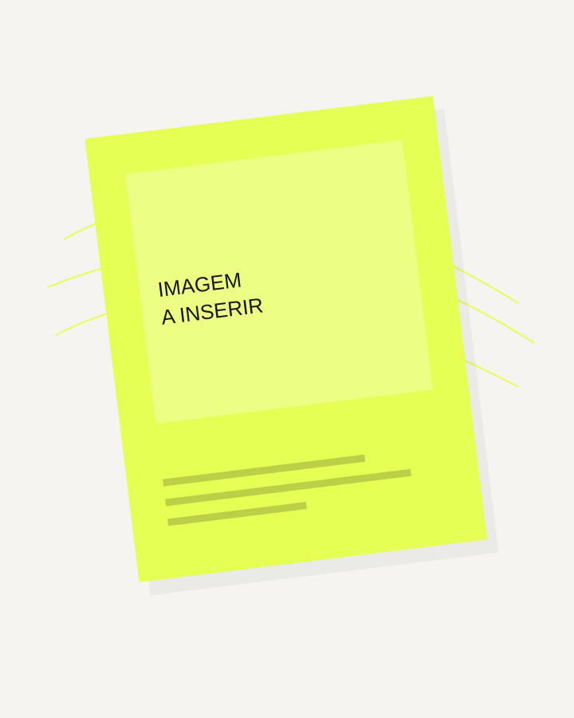

NOVA PÁGINA
Título da página
Escreva a introdução aqui.
Primeira seção
Seu primeiro parágrafo.
Outro parágrafo.
Texto e imagem
Explique a imagem nesta coluna.

Mais texto abaixo
Esta página cresce naturalmente conforme você adiciona seções.